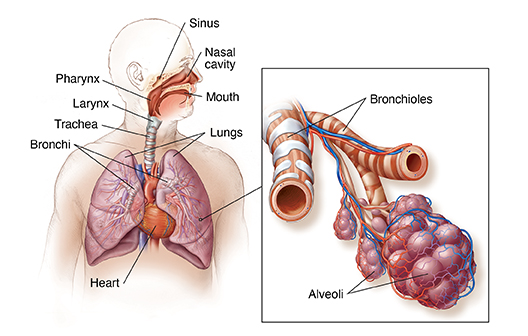
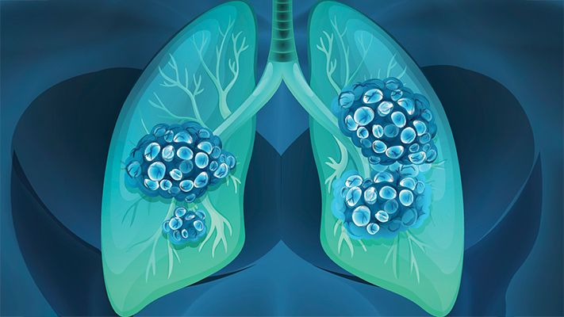

As every living organism requires gas exchange to operate, as the mitochondria in the cells of the organism needs oxygen to create energy, called cellular respiration. The gas obtained from the lungs diffuses through The transfer of gas of terrestrial animals such as humans occurs through three phases: breathing, transport of gases, and gaseous exchange. Also, most terrestrial organisms have lungs which are the main respiratory organ, and are lined up with epithelial tissues covered in cilia, producing mucus to moisturize the respiratory surface. The respiratory surface requires to be wet with a large surface area, and allows diffusion to happen.
The Respiratory System, spectrumhealthlakeland.org
The air gets inhaled into the lungs when the diaphragm contracts, decreasing the pressure. The air enters the lungs as it travels from an area of high pressure to an area of low pressure. Air enters through the pharynx, trachea and bronchi, where it finally enters the alveoli. As the alveoli has a strange shape, it increases the surface area of the air that can diffuse to the capillaries on the alveoli. This oxygenated blood gets delivered throughout the body by the circulatory system.
Lung cancer is a most common type of cancer - an uncontrolled growth of cells which causes tumours - that starts in the lungs. The tumours restrict the transportations of gases from the lungs to the bloods, where they are sent to the various parts of the body.
There are two types of lung cancer, Non-small cell lung cancer (NSCLC) and Small cell lung cancer (SCLC).
This type of lung cancer takes up about 80% to 85% of all lung cancers, and consists of subtypes, which are adenocarcinoma, squamous cell carcinoma, and large cell carcinoma (cancer.org). They are identified by the different cells found in the cancer, looked under the microscope.
Squamous cell carcinoma of the lung, pathologyoutlines.com
Sometimes called oat cell cancer, these types of cancer take up about 10% to 15% of all lung cancers. Similar to the Large cell lung carcinoma (LCLC), the SCLC also spreads incredibly fast, where according to cancer.org, 70% with SCLC would have the cancer cell already spreading to parts of their body. SCLC has an incredibly high chance of the cancer cells returning.
Many people get diagnosed with lung cancer mostly due to smoking and secondhand smoking, which causes about 90% of all lung cancer cases (lung.org). The risk of getting lung cancer substantially decreases and a person quits smoking, or even limits the amount of cigarettes they smoke. Other causes of lung cancer, although somewhat rare, are being exposed to radiation (x rays) multiple times, exposure to Radon or Uranium, and could be caused by genetics, where it’s been passed down by a family member. The genetics will be breifly described below.
Lung cancer shares all the properties of any other cancers, which are mainly caused by mutation of DNA of a cell. These mutations are occured in a both extrinsic and intrinsic ways. Extrinsic means that source from outside of the body alters with the genomic sequence, and intrinsic is where factors such as genetics causes a replication error.
Extrinsic factors consist of X-rays, UV lights, chemicals (benzene), and radioactive elements (Radon). The damages done by external factors could be fixed by a repair mechanism of a DNA. However, if the repair doesn’t happen, apoptosis, or programmed death of a cell, occurs. Sometimes the apoptosis also doesn’t work, creating enough mutation to create a cancer cell. The process repeats and duplicates to form a tumour on a body.
Thymine Dimer, theconversation.com
Intrinsic factors are replication error of genes inherited from a family member. A certain change in DNA (alternations in chromosome 6) could change the possibility of a person getting lung cancer. Also, certain people inherit a better ability to break down cancer-causing chemicals from a cigarette.
On top of cell-specific symptoms mentioned above, there are a few more common symptoms of lung cancer, which are:
Lung cancer are usually diagnosed by taking tests. These are the possible ways to diagnose cancer of an patient:
Although the best treatment for lung cancer would be to prevent it - not smoking, there are still treatments for lung cancers. Possible treatments for non-small cell lung cancer are surgery, chemotherapy, radiation therapy, and targeted therapy (cdc.gov). If a person has Small cell lung cancer, the doctors will run tests to find if the patient has genetic mutation due to the cancer cells, and treat them accordingly.